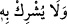

mâsivâya kapatmak ve Hz. Mevlâ’yı müşâhededen başkasına açmamaktır. Nitekim
Allah Teâlâ: “(Muhammed)in gözü kaymadı ve sınırı aşmadı.” (en-Necm, 53/17)
buyurmuştur.
Yüzümü cümleden çevirdim sana döndüm
Gözümü cümleye kapattım senin dîdârını gördüm
“Ve Rabbine ibadette hiçbir şeyi ortak koşmasın.”
Ebü’l-Bakâ der ki: “Rabbine ibâdette” ifâdesinin, Rabbine ibâdet sebebiyle
anlamında olması da mümkündür.”
el-İrşâd’da der ki: “Hem münkirlerin yaptığı gibi Rablerinin âyetlerini ve O’na
kavuşmayı inkâr ederek şirk-i celî/açık şirkte bulunmasın, hem de riyâ ehlinin ve
menfaat talebinde olanların yaptığı gibi şirk-i hafî/gizli şirk içinde olmasın.”
İbn Abbas (r.anhümâ)’dan rivâyet edilmiştir: “Allah Teâlâ, “
(O’na ortak
koşmasın)” buyurmamıştır. Çünkü O, kulunun kendisine yaptığı ve onun yüzünden
övülmekten hoşlandığı ameli kastetmiştir.”
Hasan Basrî’den rivâyet edilmiştir: “Bu âyet, yaptığı amelle hem Allah’ı hem de
insanları murâd ederek amelde ortak koşanlar hakkındadır. Nitekim rivâyete göre
Cündeb b. Züheyr (r.a.) Rasûlullah (s.a.)’e: “Ya Rasûlallah! Ben, Allah için amel
işliyorum. İnsanlardan birinin bu amele muttalî olması da hoşuma gidiyor.” dedi. Bunun
üzerine Hz. Peygamber (s.a.): “Allah Teâlâ şirk koşulan ameli kabul etmez.” buyurdu.
[232] İşte O’nu tasdik etmek üzere bu âyet nâzil oldu.
Diğer bir rivâyette Hz. Peygamber (s.a.) O’na: “Senin için iki ecir vardır: Gizlilik
ecri, aleniyet ecri.”[233] buyurmuştur. Bu, niyete göredir. Kâmil, ihlâs sâhibi ve
Allah’tan başkasından yüz çeviren kimselerin şânından olduğu üzere kendisine uyulması
için amelinin açığa çıkması kişinin hoşuna giderse veya farz ibâdetlerde olduğu için
kendisinden töhmeti uzaklaştırmak için amelini açıktan yaparsa, o kimse için iki ecir
vardır. Ancak amelini açıktan yaparak insanların övmesini, isminin ve şöhretinin
yayılmasını isterse; bu, sırf riyâ ve şirktir. Bu durumda yolun başında olan kimse
(mübtedî), amelini ifsâd etmekten kaçınmak için onu gizler.
Abdullah b. Gâlib’ten rivâyet edildiğine göre o, sabahleyin “Bu gece Allah beni
hayırla rızıklandırdı; şunu okudum, şu kadar namaz kıldım.” derdi. Eğer ona: “Ey Ebû
Firas! Senin gibi bir kimse, böyle der mi?” diye sorulsa, o buna şöyle cevap verirdi:
Allah Teâlâ: “Ve Rabbinin nîmetini an.” (ed-Duha, 93/11) buyuruyor. Siz “Allah’ın
nîmetini anlatma!” Diyorsunuz. Dolayısıyla Allah’ın ihsan ve lütfunun dile getirilmesi,
başkasının kendisine uyması kastedildiğinde, kendisi de fitneden emin olduğu zaman bu
ve benzeri sözleri söylemek câizdir. Ama gizleyip söylememesi daha evlâdır. Böyle
değil de sırf riyâ ve süm‘a ehline benzemek kasdı ile olursa, bunu terk eder. el-
Keşşâf’ta Duhâ sûresi tefsîrinde böyle denilmektedir.